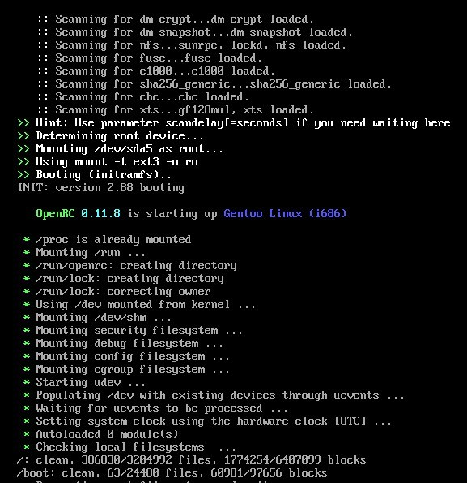

As some people know, I'm a Gentoo user since some years ago. And as anybody knows, SystemD is a sort of crap and there lots for of reasons why. And one of the best alternatives (or the best alternative) is OpenRC.
However, I came here to show you how to use a purest OpenRC, even in front-end or back-end.
Wait a minute, isn't OpenRC already pure?
Not exactly.
Do you remember the oldie SysVinit? Well, this is the init system used in many Unix-like flavours (and, of course, Linux flavours). And SystemD came as a kinda replace of SysVinit. In fact, the latter is still used by, for example, BSD flavours like FreeBSD, as SystemD can't be non-Linux compatible. Also, Linux distros such as Slackware still use it.
OpenRC is the default init system used in Gentoo (as well as created by some members of that community), and being available to lots of Linux distros (and other Unix-like OS), only some other ones use it, such as Alpine Linux or Manjaro. Of course, the most complete documentation available for OpenRC is in the Gentoo Wiki.
Well, one day, I find there you can use an alternative init binary to run it, its own init binary indeed since 0.25 release. And there are the instructions to use it. However, I found that documentation is kinda incomplete and I'll explain you later why.
You must keep in mind some things before trying that:
- Startup may be slower than usual the first time. Don't worry, that's normal.
- Some binaries, i.e.
haltorreboot, are not available because they're SysVinit-based. Instead, there's a new one calledopenrc-shutdownwhich is called with an argument to make it what you expected. This will be explained later. - You must use OpenRC with ConsoleKit, although they already came together. I'll explain it later too.
- The file
/etc/inittabis ignored as being part of SysVinit. Instead, the TTYs must be enabled manually using theagettydaemon. - All the process is painless and reversible.
Now you've been noticed of the mentioned before, let's start!
First, you must add the init=/sbin/openrc-init kernel line in your bootloader. I use GRUB, so the process is easy as modify the /etc/default/grub file and then regenerate the config file with grub-mkconfig -o /boot/grub/grub.cfg (depending on your OS or GRUB version).
Then, you must make the TTYs you're going to use enabled. As the /etc/inittab is not used anymore, you can create a symlink to make it start on boot. You can create as much of symlinks as TTYs you want. For example, for the first TTY, you can do this:
ln -sr /etc/init.d/agetty /etc/init.d/agetty.tty1
And then, make it start in default level:
rc-update add agetty.tty1 default
You can repeat the process with the other TTYs with changing the number in the symlink file and rc-update command.
Finally, as you're using a Desktop Environment, of course you need ConsoleKit. So let's create some scripts to make it reboot or poweroff. For that, the names must be as indicated by CK and depending on what to do.
For the first script (which we must be name it ck-system-stop), its content must be this:
#!/bin/sh
openrc-shutdown -p
The 2nd script we must name ck-system-reboot and the content is the same as the previous one, but the parameter must be -r instead of -p.
Of course, both scripts must have execution permissions assigned:
chmod +x ck-system-stop
chmod +x ck-system-reboot
And you can copy them into the /usr/lib/consolekit/scripts directory. Don't worry, permissions will remain.
Now just reboot the system and you're ready.
I hope this may be helpful for every one who uses OpenRC as its init system.
Jorgicio